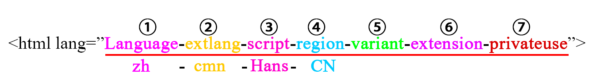

一、资源
先提供资源。如果我弄错了什么，请以这些文档为准：
W3C文档、IANA已登记的子标签、BCP 47、RFC 5646。
二、格式简介
先上一张图片：

一个Language Tags，由①到⑦一共四个子标签组成。有什么盘算不清楚的，请参考资源部分提供的文档。
三、各部分含义
①language：主语言，用代码“zh”表示汉语，小写。好像对于大小写没有强制要求，习惯而已。还是遵循习惯吧，总让别人看着别扭不是彰显个性的好办法。
②extlang：翻译成“扩展的语言”？对于汉语而言，这个部分表示的是普通话和方言。比如“cmn”表示普通话，“yue”表示粤语，“lzh”我也不知道表示什么。小写。
③script：书写格式，汉语不存在西方语言的拼写变化，只有“简体”和“繁体”之分。“Hans”表示简体，“Hant”表示繁体，首字母大写。
④region：地区，跟汉语有关的地区大概就是中国大陆（CN）、中国台湾（TW）、中国香港（HK）、中国澳门（MO）、新加坡（SG）这五处。
⑤⑥⑦：你猜……
四、方言的困扰
我数了一下，除了“cmn”表示普通话之外，IANA还批准了至少13个方言子标签，罗列如下：
cdo、cjy、cpx、czh、czo、gan、hak、hsn、lzh、mnp、nan、wuu、yue
引起困惑的是，这些标签，既可以作为extlang子标签表示方言（扩展的语言？）也可以放在language位置作为主语言。那么这些标签和传统的“zh”标签是什么关系呢？IANA把“zh”定义为“macrolanguage”，搞不清楚怎么翻译，微语言？宏语言？还是语系？BCP 47的观点认为汉语包含若干语言，它似乎认为汉语的方言可以视为独立的语言。所以，“zh”依然可以作为主语言，然后在extlang的位置标示方言，即<html lang="zh-cdo-Hans”>这样的格式。同时它也支持直接把方言作为主语言使用，即<html lang="cdo-Hans”>这样的格式。
弄清方言带来的困惑之后，我个人的建议是使用“zh”作为主语言。我不想进行政治讨论也不想研究深奥的学术问题，建议只使用“zh”做主语言子标签的唯一理由是避免混乱。现在为数不多（就算不多吧）的方言标签还是一种很幸福的状态。别忘了江湖上有着反击战中用方言当密语的传说，而哈尔滨西安成都恐怕又是不同的方言。谁知道IANA的大佬们未来会批准出多少个中国的语言来，都背下来？或者维护代码的时候，先查一下这是中国方言还是某个犄角旮旯的外语？
“zh”表示中文；“zh-xxx"还是表示中文，不过需要考虑方言特性。这样的表达不会带来任何误解。
五、越短越好
W3C的建议是：“The golden rule when creating language tags is to keep the tag as short as possible”。标签的某些部分确实没有必要。比如如果不涉及语音合成等应用，extlang部分存在的意义微乎其微，不管你是什么方言口音，写出来的是一样的文字。而region部分对于汉语而言似乎实意义也不大，有人知道新加坡人说普通话和大陆人有什么区别吗，我不太清楚。
所以，W3C的示例就成了最好的用法——“zh-Hans”——中文，简体。足矣。或者我个人觉得只用“zh”也可以，混用简繁可以有啊。
六、兼容
传统上，一般使用“zh-CN”，新的标准是不是被所有的浏览器支持，这个我真的没有精力去试一试，或者目前使用“zh-Hans-CN”更保险一些？
七、免责
不能保证内容的正确性。更可靠的手段是阅读标准文档。
写这篇小文，是因为刚刚帮朋友讲了一下相关的内容，就顺手写下来了。还能帮到别的网友的话，那是我的荣幸。
虽然提供了四个资源链接，其实这一次我并没有再次阅读。全是靠记忆写的，如果有什么错误的地方，还请谅解，也请您向我指出。